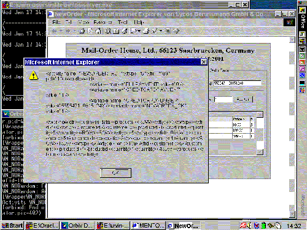

| Next Step |
XML Output of Activity NewOrder
For completeness we show here the XML document that is sent to the XML mediator when the user pressed the "Submit Order" button and the activity NewOrder is terminating.
 |
| (click on figure to enlarge) |

When the NewOrder activity is finished, i.e., the user has entered all ordered items and pressed the "Submit Order" button, an XML document is sent to the XSQL servlet, i.e. the XML mediator, by an http post call. The structure of the output is generic and the same for all activities.
Such a message consists of two major elements:
- Business data are input or output parameters that influence the persistent business objects on which the activity’s application operates. For example, when invoking an activity to receive a new order, the customer id, id of the ordered product, and the ordered quantity are business data.
- Flow control data are input or output parameters that "merely" serve to drive the control (and data) flow among activities in the workflow, but have no long-term impact on persistent business objects beyond the scope of the current workflow. This category especially includes return codes of activities.
When an activity completes, it sends the XML message to the mediator, which then parses the message and derives the necessary follow-up actions like storing new or modified business objects and sending flow control data to a workflow engine. Business data typically reside in relational databases.
As this window is actually not a part of the workflow but of the demo, we simply close it by pressing the "OK" button ...
| Next Step |